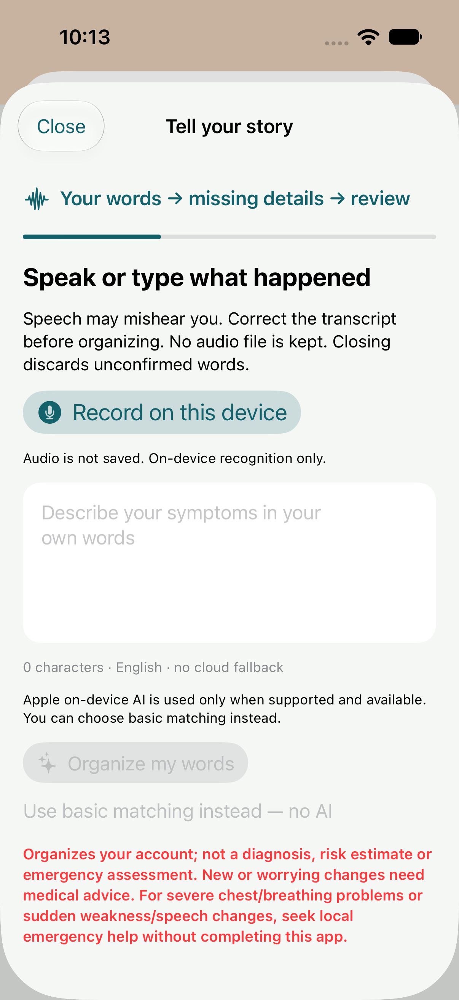
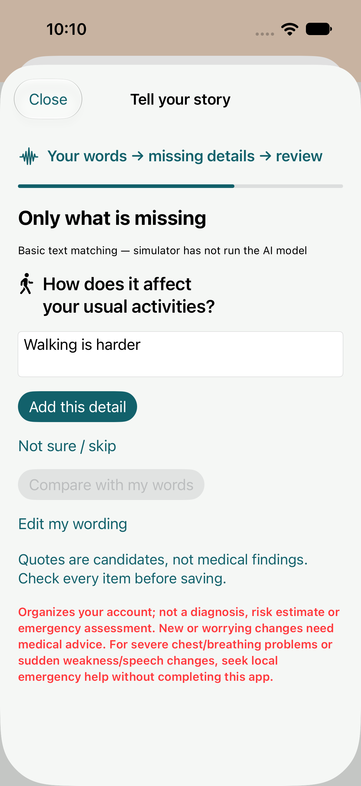
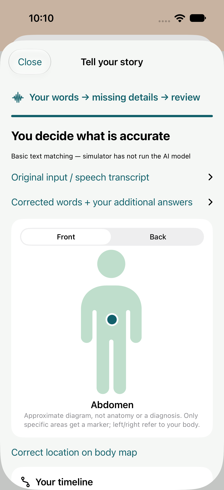
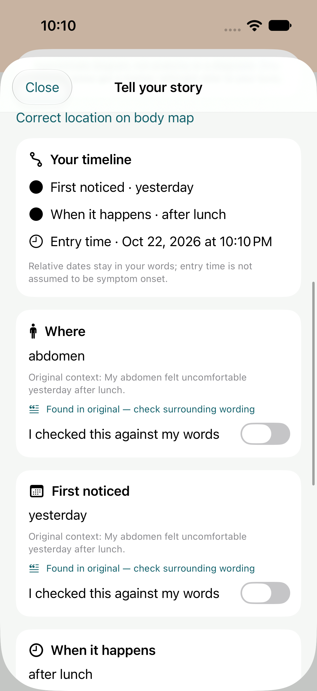
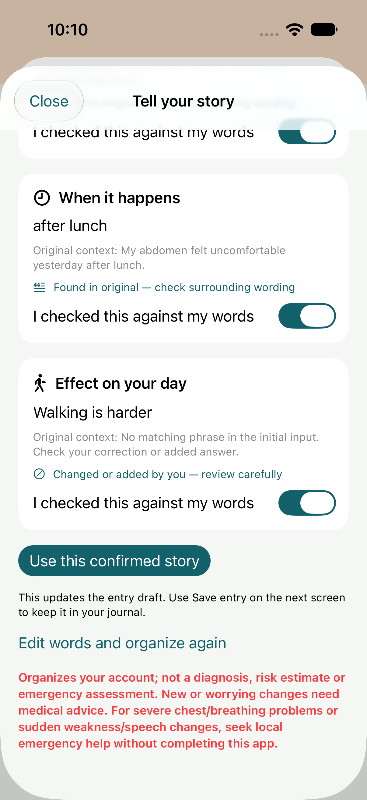
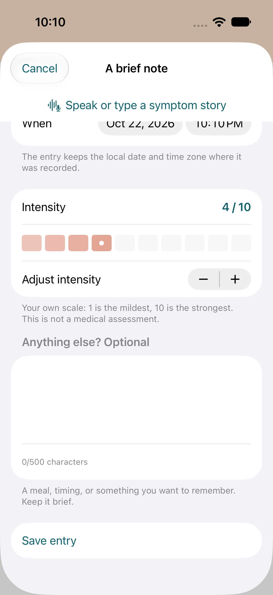
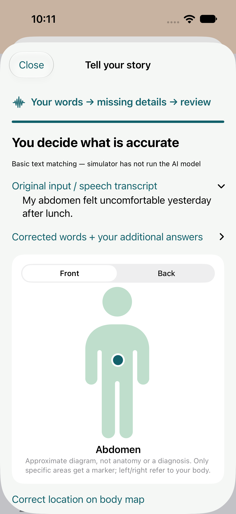
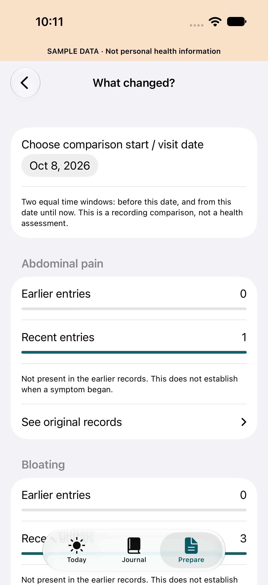

A little note.
A clearer visit.
Pre-release: VisitBrief is being prepared for its first App Store release.
VisitBrief is a private symptom journal and appointment-preparation app for adults.
See the recording journey
Speak or type, fill missing details, check your own words, then save.
Actual app captures from the build 6 simulator workflow, retained in build 7. Fictional demonstration content. These images do not demonstrate microphone recognition or Apple AI running on a physical iPhone. The interface is English; Apple system sheets may follow your device language.

Tell it in your own wordsOptional on-device English speech, or typing. Check the transcript.
Fill only the gapsAdd an activity impact without repeating known details.
See where you noticed itApproximate front/back location; correct it yourself.
Keep your timing intactOriginal time words and a separate entry timestamp.
Check every suggestionCompare source context and your added answers before confirming.
Save a record you reviewedChoose your own symptom name, date and intensity.
Your original words stayReopen the record; confirm again after changes.
Bring the recording historyCompare equal time windows and inspect the original entries.Support
For app help, contact christianbrain@gmail.com. Include your iPhone model, iOS version, app version, and a description of the app problem.
Do not email symptom notes, medical records, backup files, backup passphrases, passwords, or payment card information. We cannot provide medical advice or recover a backup passphrase.
Speak, organize and check your story
Open Add entry → Speak or type a symptom story. Record in English when on-device speech is supported, or type. Correct the transcript, organize it, answer missing description details, then inspect the approximate body markers and original timing words. Compare original and added text, check all four items, choose Use this confirmed story, and then Save entry. Reopen in Journal to review your source text.
Apple on-device AI requires a supported iPhone, iOS 26 or later and an available local model. Other environments show basic matching; no cloud fallback is used. The app stores text, not an audio file. Denying microphone or Speech permission leaves typing available. Prepare → What changed since my visit? compares actual recording windows rather than disease risk.
How do I back up my journal?
Open Settings, choose a passphrase of at least 12 characters, select Export encrypted backup, and save the file somewhere you control. The journal is excluded from automatic device backup. Keep the passphrase separately and test that you can restore a copy before changing devices.
How do I prepare a report?
Open Prepare, choose a period, add questions and highlights, then select Review my report. Read the report and turn on Reviewed by me before sharing. PDFs and CSV files are readable, so share only with people and services you choose.
Why are there unrecorded days?
Not recording a day is different from confirming that you had no symptoms. VisitBrief keeps these separate and calculates intensity averages from actual symptom entries.
Premium: one payment
Premium unlocks period comparison and reusable question templates with a one-time purchase. There is no subscription or recurring charge. The US price is $1.99; the App Store shows the price for your country before purchase. Use Restore purchases in Settings after reinstalling with the same Apple Account. Apple handles purchases and refund requests. Basic notes, PDF and CSV exports, and encrypted backups remain free.
Delete your data
Use Delete all notes on this iPhone in Settings. Separately delete any backups or exports you saved elsewhere. No VisitBrief account or health-data server is used.
Medical boundaries
VisitBrief is a personal record and preparation tool, not medical advice, diagnosis, treatment, or emergency care. For health questions, contact a qualified clinician. For an emergency, contact your local emergency service.
© 2026 Christianbrain